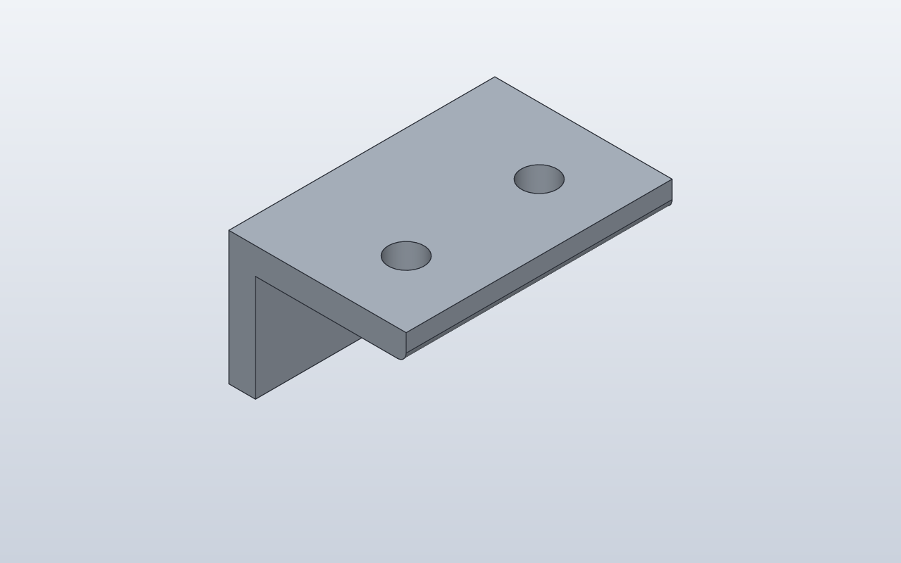

Model preview

Native SolidCraft image, matching this source revision.
An XZ polygon extruded along Y with an edge fillet and two native SolidCraft Hole features.
Files
Download the source and the generated command plan.
Command JSON describes CAD actions; it is not an already-saved .sc design.
Construction stages
- Draw the L profile
- Extrude its width
- Round an exposed edge
- Sketch mounting holes
- Cut through the flange
Python model
@dataclass
class Bracket:
width: float = 60
thickness: float = 6
def build(self):
profile = Polygon2D(
[(0, 0), (40, 0), (40, self.thickness),
(self.thickness, self.thickness),
(self.thickness, 30), (0, 30)],
plane="XZ",
)
body = profile.extrude(self.width, direction=Direction.NEGATIVE)
body = body.fillet(2, edges=[(40, -self.width / 2, -self.thickness)])
# Native Hole features on the upper face (world Z = 0).
# The XZ profile grows towards negative Z in SolidCraft.
for y in (-15, -45):
body = body.add(
Hole(d=8, depth=self.thickness), at=(25, y, 0))
body
Bracket()
Native SolidCraft command sequence
- Named CAD parameterparameters.add · name: width
Show exact command and parameters
{ "command": "parameters.add", "params": { "name": "width", "expression": "60", "unit": "mm" } } - Named CAD parameterparameters.add · name: thickness
Show exact command and parameters
{ "command": "parameters.add", "params": { "name": "thickness", "expression": "6", "unit": "mm" } } - Create sketchsketch.create · name: Profile, plane: XZ
Show exact command and parameters
{ "command": "sketch.create", "params": { "plane": "XZ", "name": "Profile" } } - Profile edgessketch.line
Show exact command and parameters
{ "command": "sketch.line", "params": { "points": [ [ 0.0, 0.0 ], [ 40.0, 0.0 ], [ 40.0, 6 ], [ 6, 6 ], [ 6, 30.0 ], [ 0.0, 30.0 ] ], "closed": true, "ids": [ "a", "b", "c", "d", "e", "f" ] } } - Finish sketchsketch.finish
Show exact command and parameters
{ "command": "sketch.finish", "params": {} } - Extrusion / cutsolid.extrude · direction: negative, body_name: Bracket
Show exact command and parameters
{ "command": "solid.extrude", "params": { "distance": "width", "direction": "negative", "body_name": "Bracket" } } - Rounded edgesolid.fillet
Show exact command and parameters
{ "command": "solid.fillet", "params": { "edges": [ [ 40.0, -30.0, -6 ] ], "radius": 2.0 } } - Native Hole featuresolid.hole
Show exact command and parameters
{ "command": "solid.hole", "params": { "position": [ 25.0, -15.0, 0.0 ], "diameter": 8, "targets": [ "Bracket" ], "depth": "thickness" } } - Native Hole featuresolid.hole
Show exact command and parameters
{ "command": "solid.hole", "params": { "position": [ 25.0, -45.0, 0.0 ], "diameter": 8, "targets": [ "Bracket" ], "depth": "thickness" } }
Verification: Native verified · snapshot from matching run.
The source and JSON here are from this checkout. A matching native snapshot appears only after successful SolidCraft verification.
Native qualification is reported only when the matching verified image exists.